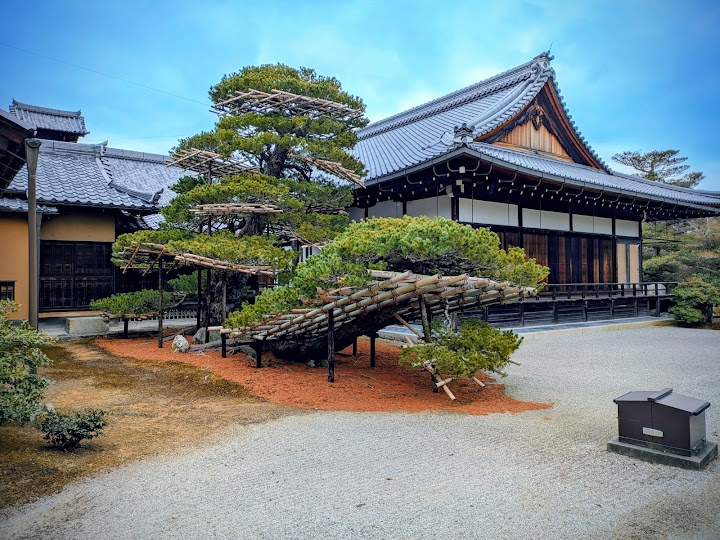
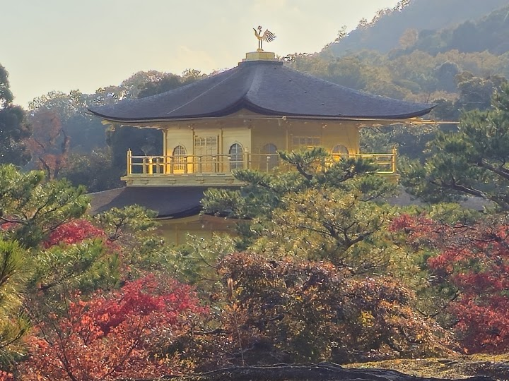
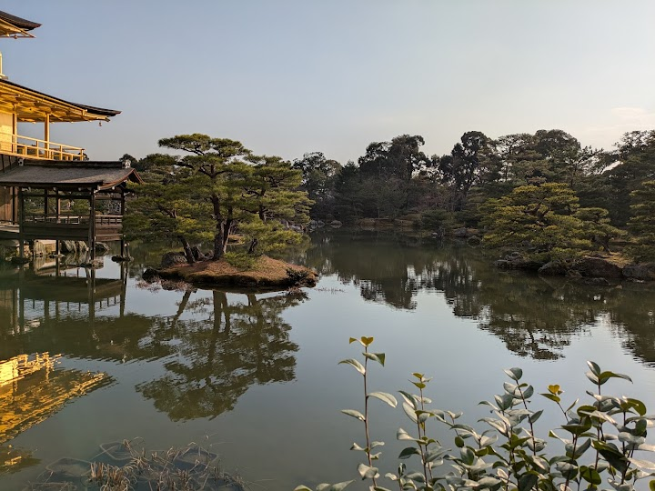
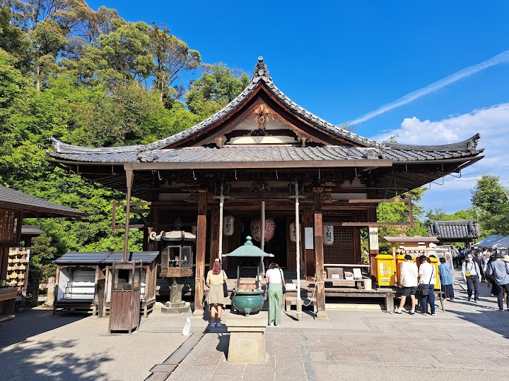
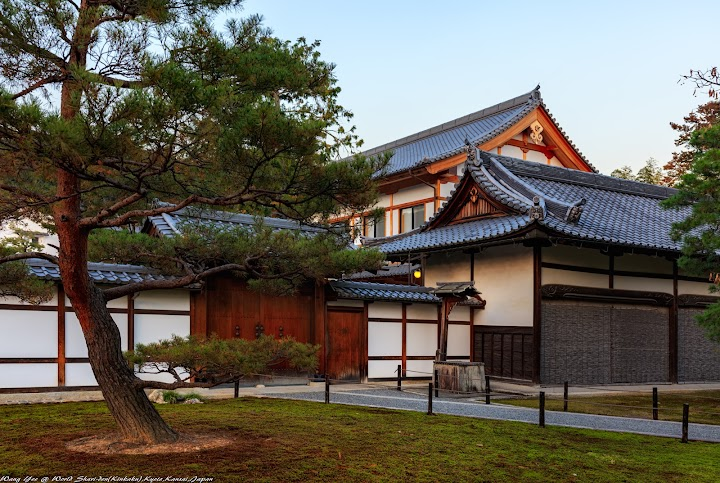

Kinkaku-ji
Kinkaku-ji, the Golden Pavilion, is a Zen temple whose upper floors are covered in gold leaf and reflected in a still pond within landscaped gardens. It began as the villa of the shogun Ashikaga Yoshimitsu in the late 1300s, and it is one of Kyoto's best-known sights.
Open in Google Maps (street view, more photos and reviews there)






Visitor tips on finding it and getting there
500¥ entry fee, easy to get to via bus, and quite nice experience. It’s by water and there is some shade so it wasn’t too bad on a hot day. The entry ticket is also pretty, so it’s a nice souvenir to keep, and there are brochures handed out at the beginning. Enjoyable place to walk around and take pictures, and a plethora of souvenir shops for different budgets. There are also vending machines with drinks and ice cream at the end. Keep in mind: taking photos in large groups, tripods/monopods, and food/drinks are prohibited.
A stunning and amusing pavilion, it's up in the north of the city but it was worth the trip to get to it. The temple in it's totality is really big and walkable, very colorful and peaceful too (that can change depending with the tourism, but when I went was pretty much with overturism but that didn't change the experience that much). The golden pavilion being the main attraction is such a correct take, it is as impressive as it seems and it's the attractive color that makes it unique and a pleasure to the eye. Of course, the pavilion went through such rigorous history and had it's rough moment
Despite the rainy weather, the location was quite bustling. The view is truly majestic, and the gardens offer a serene oasis of aesthetic and beautiful design. The golden temple is absolutely enchanting. The souvenir shops are on the pricier side but you're in a UNESCO site so it is kinda of expected. It takes around 40 minutes from Kyoto to the temple by bus but only 20 by taxi, I recommend taking the taxi to save time. In our case, no waiting and we bought the tickets on site (500 yen for adults).